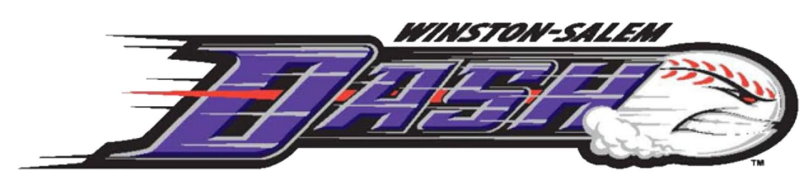
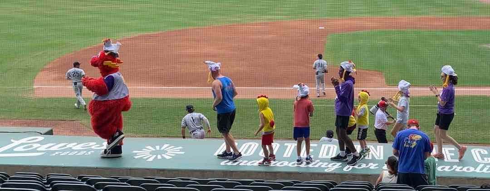

Truist Stadium
I've never been a big sports fan...
But attending a game of Winston-Salem's minor league, has always been more than the sport. I remember my first game. This was actually before BB&T Ballpark was constructed and the team was originally called the Winston-Salem Warthogs. This was the name chosen in 1995, in honor of the North Carolina Zoo's acquisition of some warthogs. The team played in a smaller humble field, Ernie Shore Field, but I always remember having a great time at the games.
We would often attend the BB&T sponsored Winston Salem Warthogs game, because my Dad worked for BB&T and was able to get tickets and often free food when attending those games. Between riding the merry-go-round or trying to catch a foul ball on the grassy hill, I remember those first games being quite fun.
In 2008, the Winston-Salem Warthogs also hosted a clinic for kids to learn how to play the game from some of the team's players. I got to go onto the field an expand my limited knowledge of the sport. Here's a little excerpt from my parents' old blog that detailed the day.
"Yesterday Camdyn participated in the local minor league baseball team's clinic. For two hours she got to warmup and learn baseball skills from the team's manager and some of its players. We had to run out the night before and pick up a glove since we only have two gloves; one is left handed and the other is a big softball one. We were able to find a pink one with matching wristband and ball. Camdyn had almost as much funny as daddy did being on the field, meeting the team, and learning about the game. She got some practice catching fly balls, throwing, catching ground balls, and hitting. She even got to run the bases and get autographs after the clinic. On the way out of the stadium, she received a gift bag which included a ticket to that evening's game. The game was a doubleheader and the whole family went and enjoyed some baseball."
The reason I chose to start with Ernie Shore Field and the Winston-Salem Warthogs is because it was the start of so many things that made the team a special part of Winston-Salem. From the iconic carousel that would be moved to the new field and the fireworks that end every night game, there's so many traditions that follow the team to the new field.
Around 2009, construction began on the BB&T Ballpark. It would be the new home of the minor league baseball team as Wake Forest's baseball team would take over the Ernie Shore Field.
What's in a name...
In addition to the new baseball field, the team went through a bit of a rebrand. Gone were the days of the Winston-Salem Warthogs, the team was now the Winston-Salem Dash. And I absolutely love this decision. The Dash is largely in reference to the city of Winston-Salem. As you may have noticed, I always type Winston-Salem with the hyphen between Winston and Salem. I think the hyphen is really important (even though some shipping forms and maps ignore it). It's evidence of how the city was formed from two different towns, Winston and Salem, and is the typographical marker of the city's identity as "Twin City".

It also allowed for the creation of an entirely new mascot, Bolt, unique from any known animal. According to his twitter bio (@DashMascotBOLT) Bolt stepped on the scene in 2009 when discovered under the bleachers at old Ernie Shore Field. I think there are two kinds of sports mascots: animals and agents of chaos. Bolt is truly an agent of chaos and provides entertainment throughout the game with his dancing and continuous losing streak during relay games.

BOLT LEADING A DANCE ON THE AWAY TEAM'S DUGOUT
Even after the move to the BB&T Ballpark, BB&T sponsored games continued, and I got to enjoy the game in a new setting. BB&T Ballpark has become more of an integral part of the city. Its location closer to the Downtown area, and its larger stands, has allowed it to provide a resource for the city. For example, many of the city's high school proms are located at the ballpark in one of their luxury suites. It's not uncommon for groups to attend the games and receive a shoutout on the jumbotron. I've attended games as part of class trips, youth group trips and more
My sister, McKenna also wrote about her experience with BB&T Ballpark.
"The ballpark was part of every season of my life. From going to games, to business events with my dad, even my prom was there. It wasn't just about baseball but it was a place where all of us could come together for large gatherings. During COVID it was one of the only places you could meet with such a large group due to it being outdoors. My strongest memory there was of course my junior and senior prom held by the food court. The ballpark was known for its fireworks on summer night games but the fireworks at our prom were something even more magical. When I think about my hometown, I have to think of all the memories I hold at the ballpark."
Even if you're not a baseball fan, the BB&T Ballpark was and continues to be (now as Truist Stadium) the perfect place to create memories at any age.
The third renaming...
Now you may have wondered why this page is titled Truist Stadium, instead of BB&T Ballpark. What a great question! In 2019, BB&T aquired SunTrust Banks to form Truist Financial. Therefore, the ballpark became owned by Truist instead of BB&T. It has since been renamed Truist Stadium.